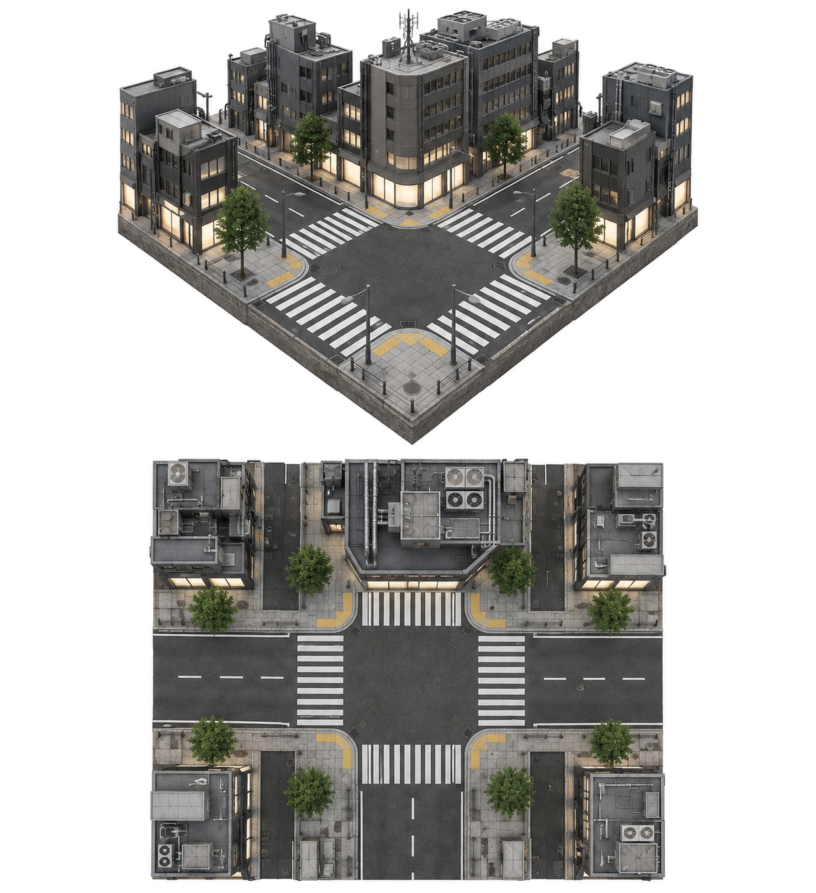
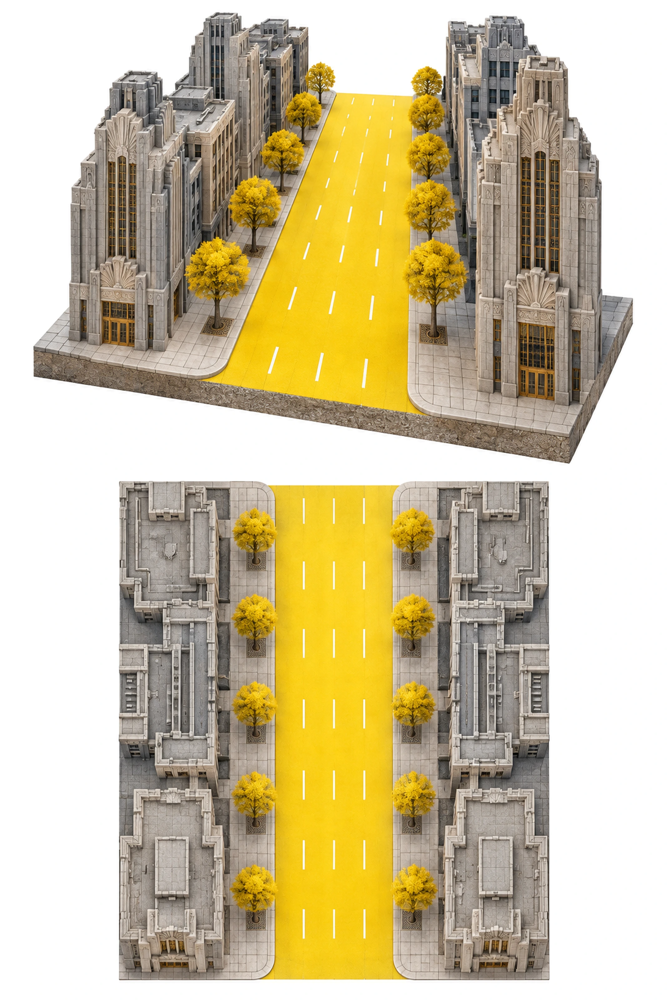
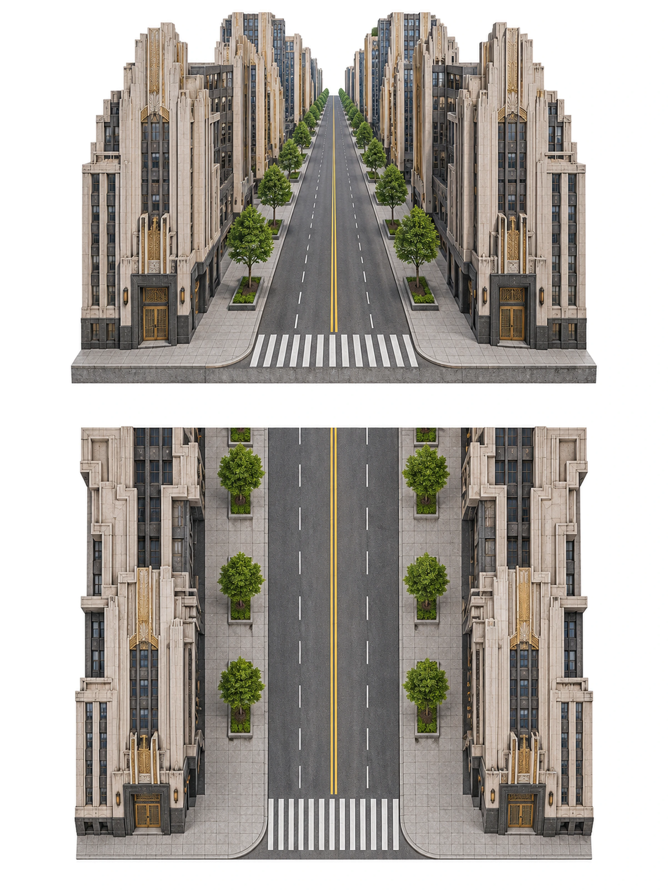
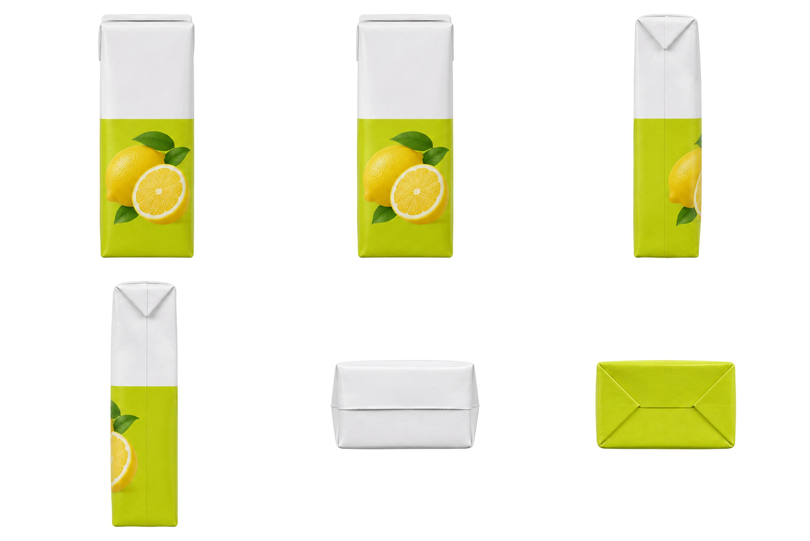
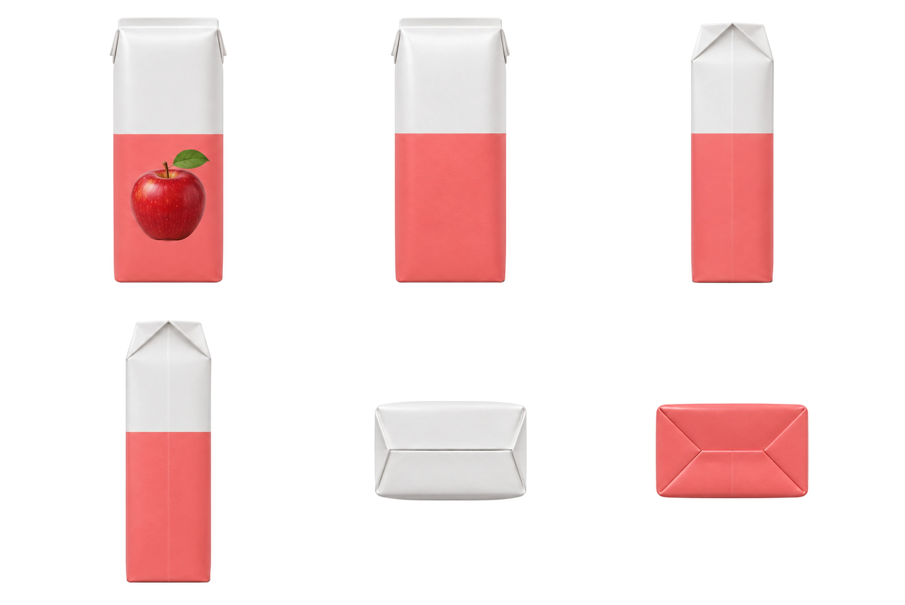
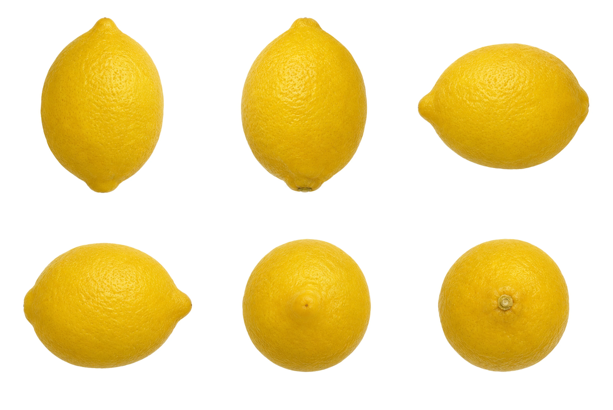
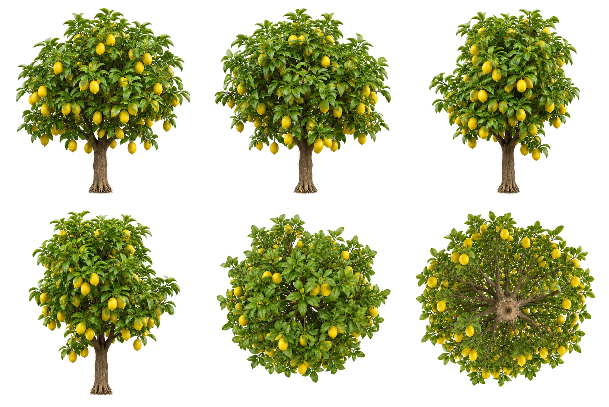
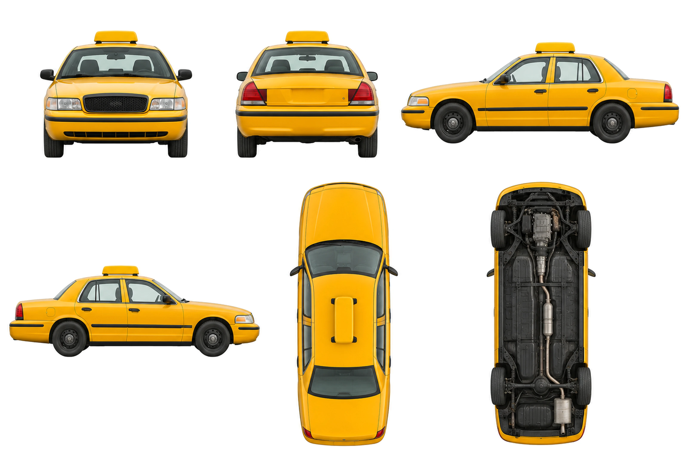
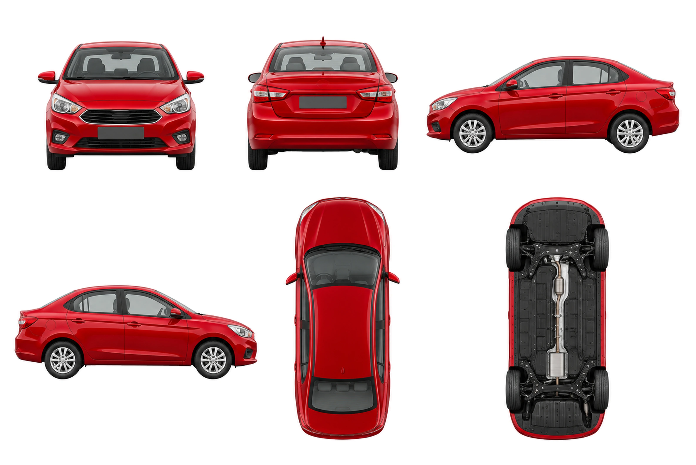
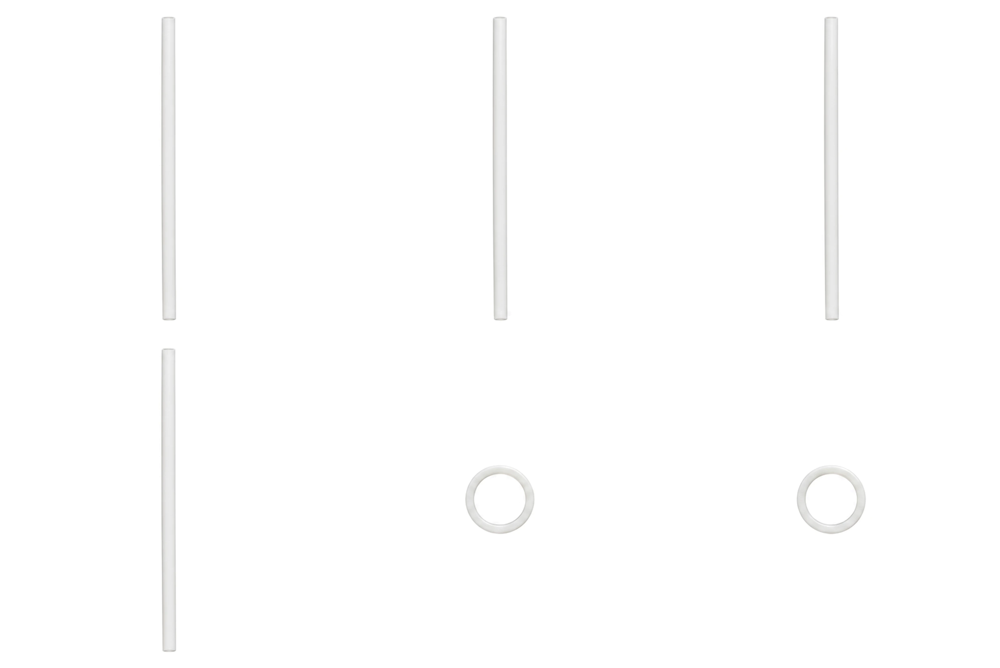

带货种草
嚼，柠檬
正在连接在线视频…
视频简介
绿发女主站在人流穿梭的夜街，一吸柠檬饮料，城市换上明亮果色。柠檬、橙子、红苹果在高楼间以巨物尺度出现，引出三个色系的盒装饮品。结尾商品集中并给柠檬口味正面定格。
在快手观看原视频 ↗制作资产
角色资产
场景资产

夜间都市十字路口
夜间都市十字路口的场景视觉设定，用于空间布局、光影与镜头背景。

日间金黄色大道
日间金黄色大道的场景视觉设定，用于空间布局、光影与镜头背景。

高楼峡谷街区
高楼峡谷街区的场景视觉设定，用于空间布局、光影与镜头背景。
道具资产

柠檬饮料方盒
白顶黄绿盒面配柠檬图形。 冷色夜街后第一个入口特写及终版主包装。 成片未完整展示的方位按可见造型补全。
橙味饮料方盒
白顶橙色盒面，橙子图形与上缘折线固定。 在高楼俯拍中由巨型橙子转入同味包装。 成片未完整展示的方位按可见造型补全。

红果饮料方盒
白顶粉红盒面和红苹果图形。 与街道巨苹果同步出现；收尾与另外两盒组成一组。 成片未完整展示的方位按可见造型补全。

柠檬
完整黄色柠檬，浅颗粒外皮、两端微尖。 夸张放大形成悬在高楼前的圆体。 成片未完整展示的方位按可见造型补全。
切面柠檬片
薄圆截片，淡黄瓤瓣、白筋和细籽。 在女主正面近景前浮动，保持圆片厚度。 成片未完整展示的方位按可见造型补全。
橙子
红橙果皮，略扁圆，表面微孔。 高空掠过楼群时按同一果实整体放大。 成片未完整展示的方位按可见造型补全。
红苹果
深红光泽果面，短木质柄。 大道中央体积夸张，在车流前保持主轴一致。 成片未完整展示的方位按可见造型补全。

柠檬树
圆叶冠密布黄色柠檬，枝干短粗。 作为日间街边的果味视觉线索，盒饮料作为另层挂在枝间。 成片未完整展示的方位按可见造型补全。

黄色城市出租车
黄色四门车和无字顶灯。 白天街道前景和高楼峡谷远景维持流向。 成片未完整展示的方位按可见造型补全。

红色轿车
红漆紧凑四门车，深窗、无字号牌。 夜街横穿斑马线提供运动遮挡转场。 成片未完整展示的方位按可见造型补全。

白色直吸管
细白开放圆管。 女主试饮镜头与主包装同框。 成片未完整展示的方位按可见造型补全。
剧本与分镜
完整剧本与分镜脚本
带货种草 · 嚼，柠檬 原片时长 39.00 秒 故事梗概 绿发女主站在人流穿梭的夜街，一吸柠檬饮料，城市换上明亮果色。柠檬、橙子、红苹果在高楼间以巨物尺度出现，引出三个色系的盒装饮品。结尾商品集中并给柠檬口味正面定格。 人物 绿发女主既是试饮者也是结尾展示者。街头人群只承担动态背景，复拍用不具名群演。 场景 夜间都市十字路口负责建立节奏；金黄色大道负责色调切换；高楼峡谷街区承载巨型果实和多包装结尾。 道具用途 三款无字包装保持同一盒型。圆片在面部近景前穿插，整果按同一几何放大。交通道具用于动势，白吸管用于入口动作。 剧本与分镜 按原片抽帧重建的复拍制作稿。画面未能确认的对白、音效与镜头节奏按下表执行。 | 镜号 | 画面内容 | 镜头视角 | 使用资产 | 动作描述 | 台词/旁白 | 音效 | 单镜头时长 | | 01 | 女主停在夜街人流中，红车从面前过 | 平视中景与贴街运动镜头 | 绿发女主、夜间都市十字路口、红色轿车 | 利用遮挡同方向快速擦切 | — | 汽车掠过、街头人声 | 4.00秒 | | 02 | 斑马线上的女主转身 | 高位广角轻旋 | 绿发女主、夜间都市十字路口 | 女主抬手，在画面中央定住 | — | 节拍抬升 | 3.00秒 | | 03 | 柠檬片掠过脸和盒饮 | 正面产品及人脸近景 | 绿发女主、柠檬饮料方盒、切面柠檬片 | 切片前后交错，露出眼部和包装 | — | 果片轻切声 | 3.00秒 | | 04 | 她吸一口，环境转日光 | 唇部特写转树下侧近景 | 白色直吸管、柠檬饮料方盒、绿发女主 | 闭眼喝下，顺同一位置切到日间 | — | 吸饮、环境音突变 | 4.50秒 | | 05 | 大片城市道路变金黄 | 车侧跟拍转道路中轴全景 | 日间金黄色大道、黄色城市出租车 | 以黄色车辆匹配下一镜头的树冠 | — | 胎声、轻快节拍 | 3.50秒 | | 06 | 柠檬树挂盒，巨柠檬升高 | 枝头近景转仰拍 | 柠檬树、柠檬饮料方盒、柠檬 | 包装从树间露出，巨柠檬升到楼顶上方 | — | 叶响、轻跃音 | 3.00秒 | | 07 | 橙子经过摩天楼并切成橙色包装 | 高空俯拍接手持产品近景 | 橙子、高楼峡谷街区、橙味饮料方盒 | 果实过画面中轴，接相同色块的盒身 | — | 高空风、色彩切换节拍 | 6.00秒 | | 08 | 巨苹果在大道尽头逼近，粉色盒列出现 | 道路中轴长焦 | 红苹果、高楼峡谷街区、红果饮料方盒、黄色城市出租车 | 果实抬起，盒子按近大远小排开 | — | 滚动低音、落点重拍 | 8.00秒 | | 09 | 女主和三款盒饮汇合，柠檬口味居中 | 低机位仰拍转正面产品定格 | 绿发女主、柠檬饮料方盒、橙味饮料方盒、红果饮料方盒 | 手从上方落下，包装一字展开，黄色款进入终版中心 | — | 终止音标 | 4.00秒 | 时长合计 39.00 秒